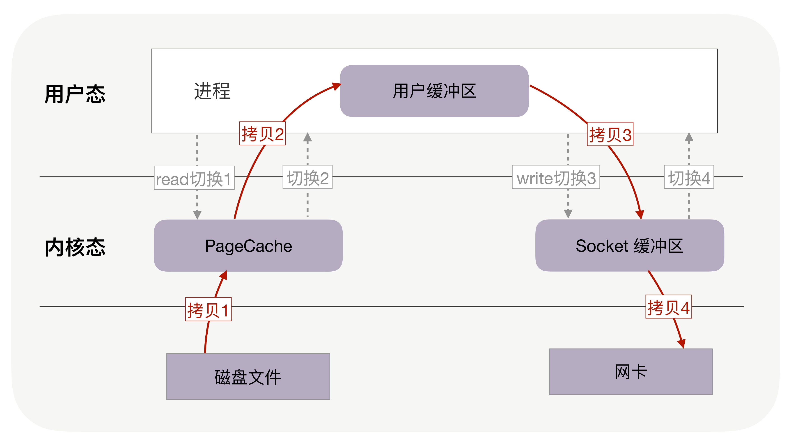
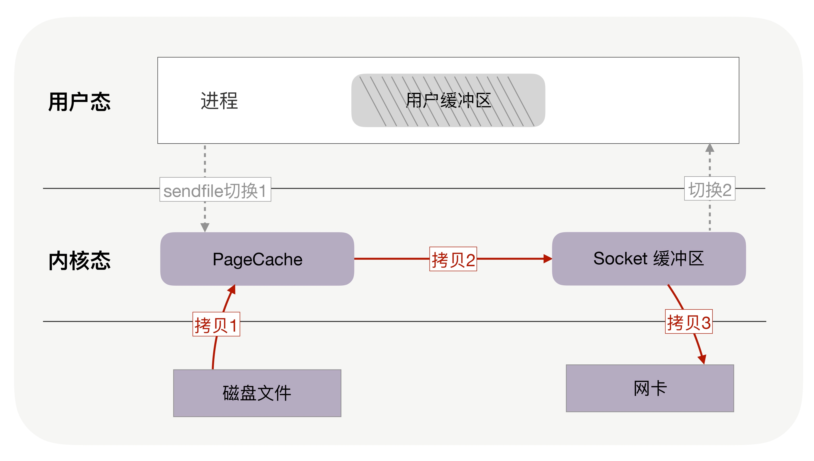
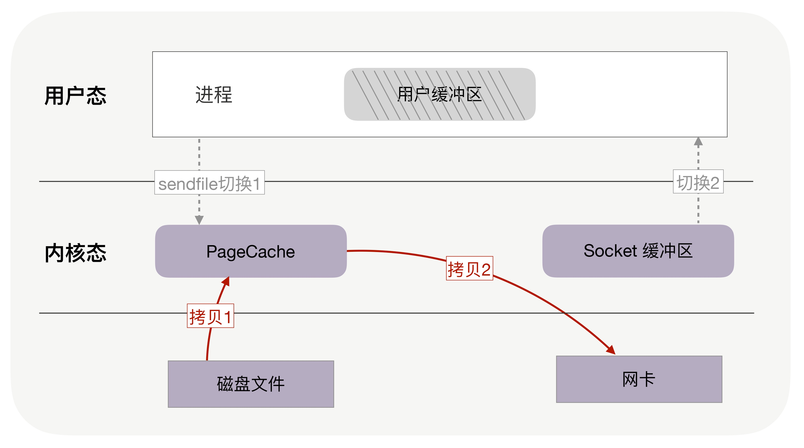
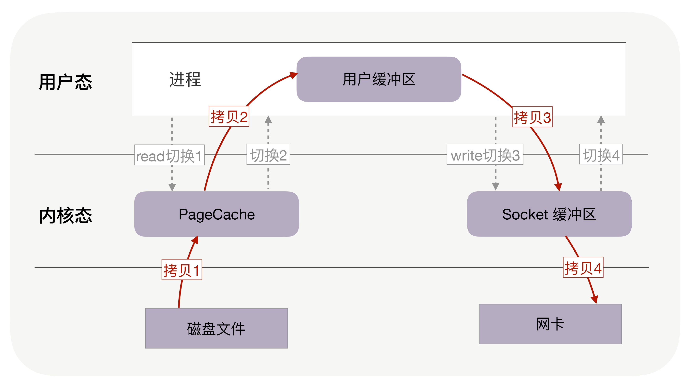
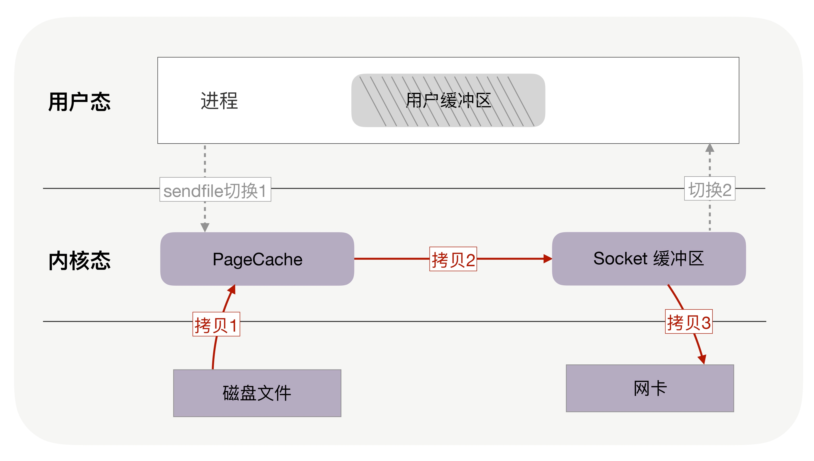
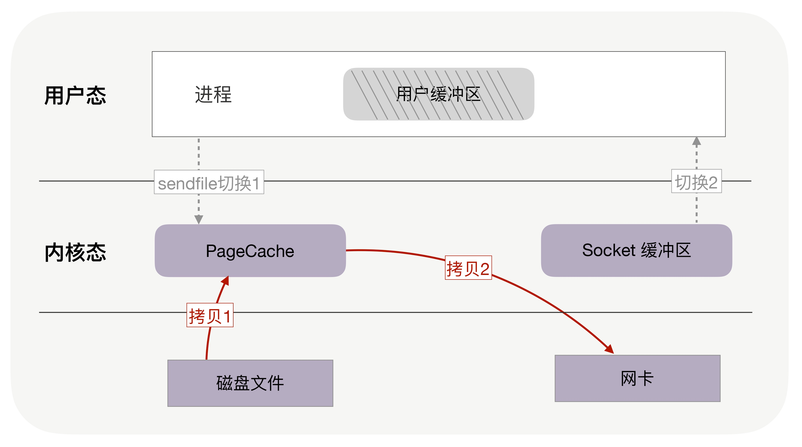

零拷贝技术
正常写入

零拷贝技术

支持SG-DMA的网卡


生命的意义是成为你自己！



由内核实现的请求切换工作，交由用户态的代码来完成就可以了
协程必须重新封装所有的阻塞系统调用，否则，一旦协程触发了线程切换，会导致这个线程进入休眠状态，进而其上的所有协程都得不到执行
线程的栈有 8MB，而协程栈的大小通常只有几十 KB。而且，C 库内存池也不会为协程预分配内存，它感知不到协程的存在。这样，更低的内存占用空间为高并发提供了保证，毕竟十万并发请求，就意味着 10 万个协程